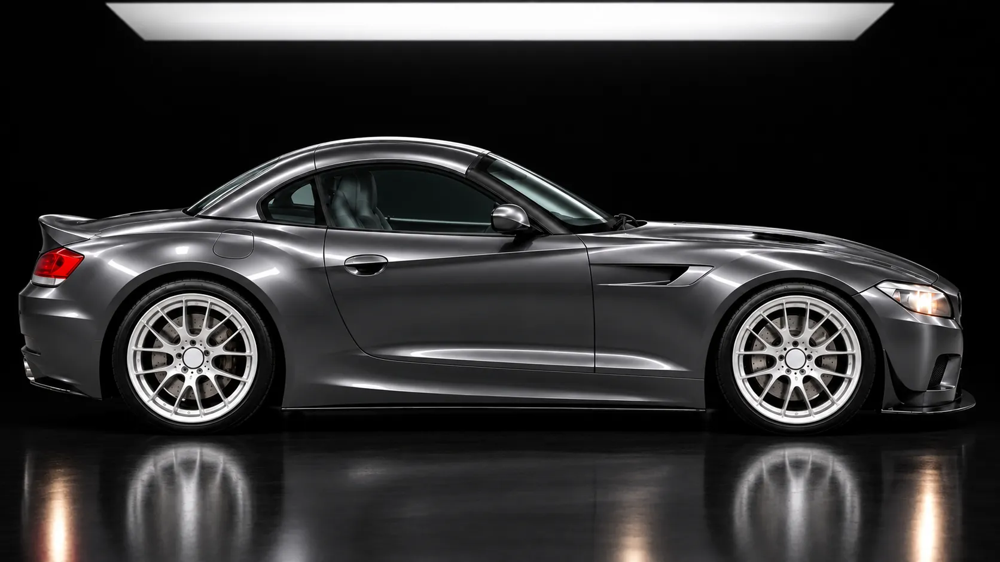
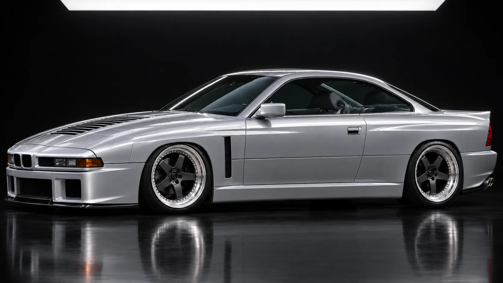
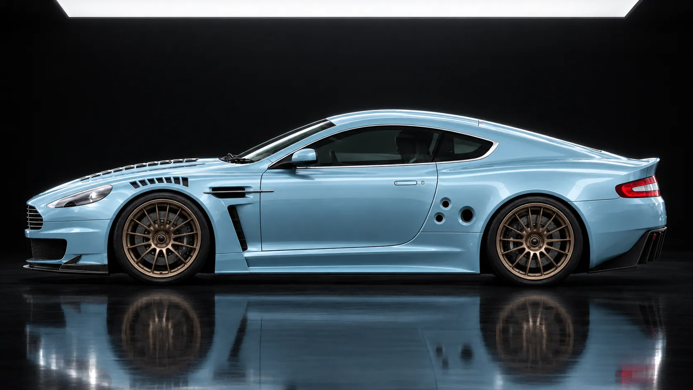

Concept film Project 97, lead study
Revival Revolutions
Endurance racers, redrawn for the road.
Inspired by
- Daytona 24
- Sebring 12
- Spa 24
- Le Mans 24
The idea
The road cars nobody built
Some of the best-looking cars of the 1990s and 2000s only ever raced. We are drawing the road versions.
You could buy the road cars that the wide-arched Daytona M3s, the Z4 GT3 and the DBR9 were based on, but they never looked or sounded like the racers. Each of our studies starts from one of those road cars, which you can still find used today, and works out how much of the race car it can take on and still be good to drive on the road.
So far this is design work. Everything on this site is a render or a drawing, and Project 97 is the car we are taking furthest.
Lead study
Project 97
BMW E36 · S54 straight-six · Manual

In 1996 the American racing E36s grew wide arches. The road car never did.
Project 97 is the E36 coupé drawn with those arches, as a two-seat road car with the S54 straight-six from the E46 M3 and a manual gearbox. It is the first car we want to build, so it has had the most work.
We want to get one car right before starting another. That means working through the body, cabin and mechanical choices together, then using what we learn on the first E36 to make the next one better.
See Project 97- The racer
- The wide-arched M3s that raced in IMSA from 1996 to 1998 and took class wins at Daytona and Sebring.
- Settled
- The exterior, the E36 coupé as the base car, the S54 engine and a manual gearbox.
- What exists
- Renders, design drawings and a blueprint laid over the standard car. No donor car or engineering work yet.



Concept renders. The engines and gearboxes are the ones we would like to fit, and none of these cars exists yet.
The racing
What the race cars won
Each study goes back to a car, or in one case an engine, that won a major endurance race. The results belong to the teams that earned them. We have never raced.
| Year | Race | Car | Result | Study |
|---|---|---|---|---|
| 1995 | 24 Hours of Le Mans | McLaren F1 GTR, S70/2 V12 | P1 Overall | 03 The V12 Grand Tourer |
| 1997 | 24 Hours of Daytona | E36 M3 | P1 Class | 01 Project 97 |
| 1998 | 12 Hours of Sebring | E36 M3 | P1 Class | 01 Project 97 |
| 2007 | 24 Hours of Le Mans | Aston Martin DBR9 | P1 GT1 class | 04 The GT1 Road Car |
| 2008 | 24 Hours of Le Mans | Aston Martin DBR9 | P1 GT1 class | 04 The GT1 Road Car |
| 2011 | 24 Hours of Dubai | Z4 GT3 | P1 Overall | 02 The V8 Coupé |
| 2015 | 24 Hours of Spa | Z4 GT3 | P1 Overall | 02 The V8 Coupé |
Revival Revolutions has no connection to these teams or manufacturers. Sources are on the notes and credits page.
Progress
Where we are
So far this is a design project. Here is what has been done and what has not.
Done
- Renders of all four cars, with Project 97 the most developed
- Design drawings and detail sheets for each car
- A blueprint of Project 97 laid over the standard E36 M3 coupé
- Cabin and colour studies for each car
- A preferred engine and gearbox for each car
Not yet
- Any engineering: structure, suspension, cooling, road legality
- A donor car, a prototype or tested parts
- A workshop or build partner
- Prices, build numbers or dates
- Orders or deposits. We are not taking either.
Recent work
- Nov 2026Six views of the car finished: front, front three-quarter, side, rear three-quarter, rear and overheadProject 97
- Nov 2026Second version of the blueprint drawn over the standard E36 M3 coupéProject 97
- Nov 2026Fourth round of the exterior chosen as the one to developProject 97
- Nov 2026Cabin and colour studies drawn for all four carsStudio
Next for Project 97 is a donor car to scan and an engineer to review the design. The plan for getting to a first car.
About
From the founder
I'm Alvaro Hachuel, and Revival Revolutions is my design studio in New York. For now it is just me.
Before this I started and sold a business that made custom car parts and restored vintage cars. I also founded Ram Motorsport Racing, the first collegiate racing team at Fordham University, where I study economics and engineering physics.
I do the design. The engineering and the build will be done with specialists, and I have not signed anyone up yet. When I do, their names will go on this page.
Alvaro Hachuel
Founder & Design Lead